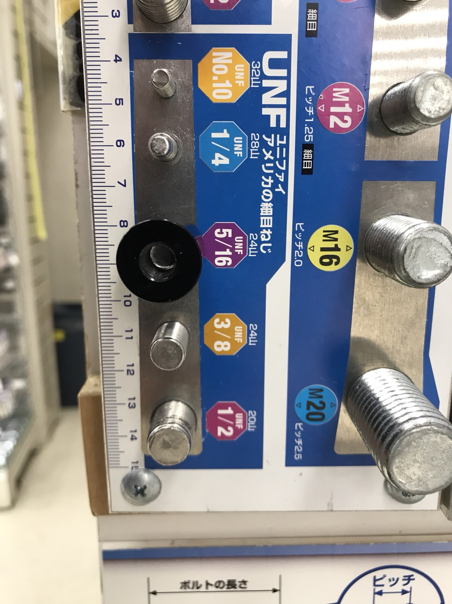
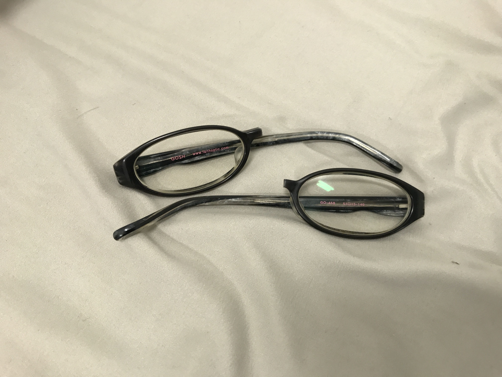
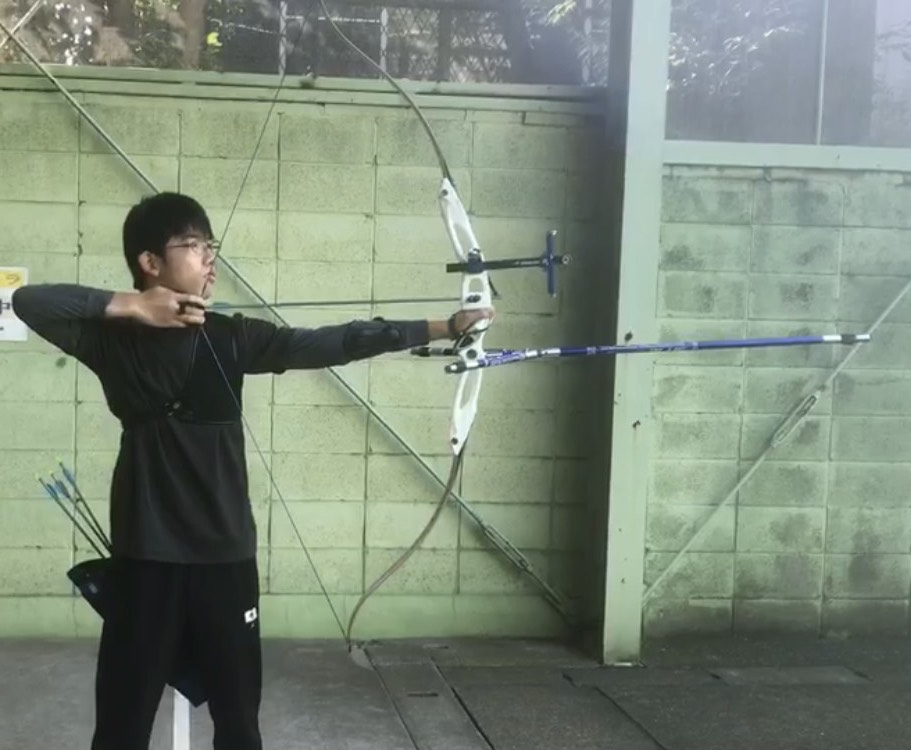
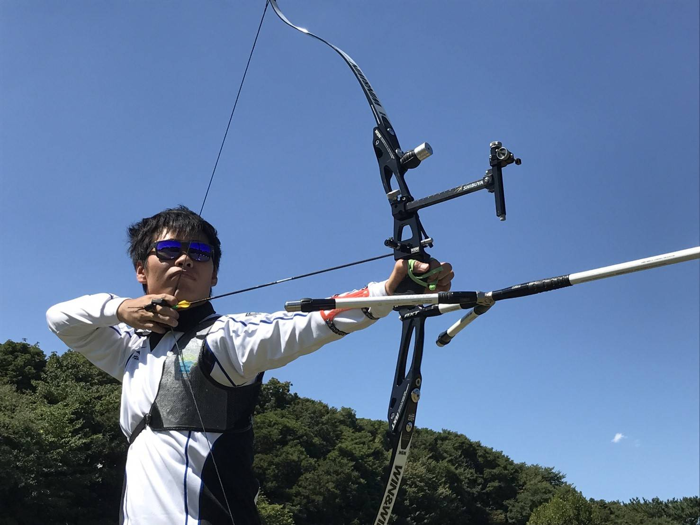
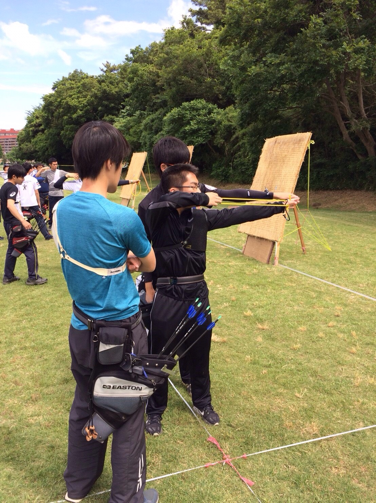
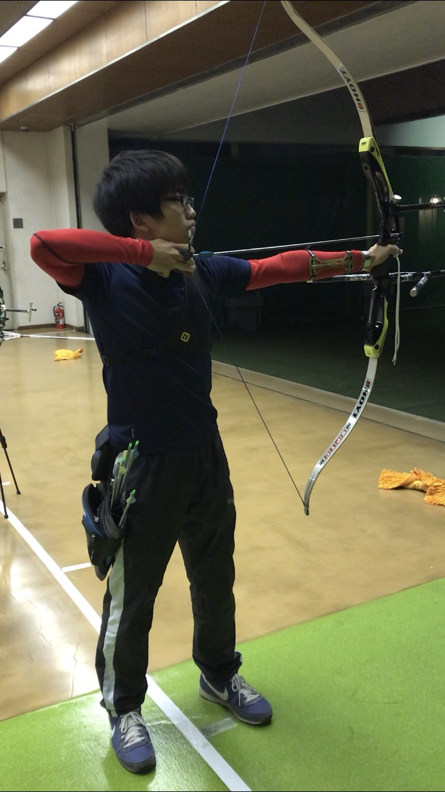
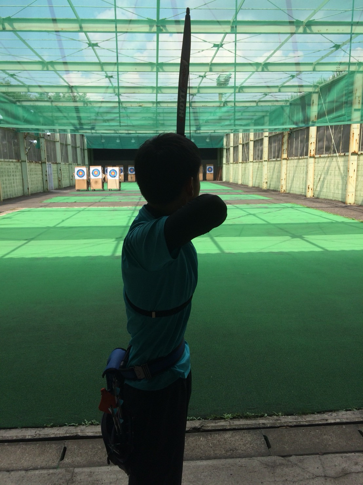

47期(2017年入部)

全日学連
雨宮 新
所属：法学部
出身：神奈川県・浅野高校
x,x,x,x,x,x,でお願いします
女子リーダー
大西 可恵
所属：文学部 人文学科美学芸術学専攻
出身：広島県・尾道北高校
テンポ良く射つ！

外主務
清水 省吾
所属：工学部 機械情報工学科
出身：奈良県・奈良高校
アーチェリーエンジョイ勢

財務
工 風清
所属：薬学部
出身：石川県・金沢泉丘高校
うちの部でやっているのは袴をはいて白黒の的を狙う競技ではないです
周 芝苑
所属：工学部 物理工学科
出身：

副将
巽 遼太郎
所属：農学部 環境資源科学課程生物環境工学専修
出身：東京都・駒場東邦高校
※検閲により削除されました

内務
西川 太郎
所属：工学部 化学生命工学科
出身：神奈川県・逗子開成高校
タコベル行きたい

内主務
野上 順乃介
所属：経済学部
出身：東京都・栄東高校
アーチェリー、控えめに言って楽しいです

長谷川 郁
所属：法学部
出身：東京都・聖光学院高校
どんどんうまくなりたいです！
主将
藤岡 雅洋
所属：工学部 機械工学科
出身：東京都・城北高校
D2b出したい
船越 圭太
所属：文学部 宗教学宗教史学専攻
出身：神奈川県・早稲田高校
気楽に

副務
山﨑 雄輔
所属：工学部 計数工学科
出身：東京都・駒場東邦高校
めりはりつけて頑張ります！